01Vue d'ensemble
L'outil a trois onglets :
- La Galerie présente la flotte de référence (vaisseaux et stations de
fleet.json) et ta bibliothèque personnelle, en lecture seule. - L'Éditeur sert à composer librement un vaisseau ou une base, à partir des 13 modules compatibles STT-6.
- La Prise de vue réunit la caméra, la planète générée, les effets et les filtres, pour de belles images ou de courtes vidéos.
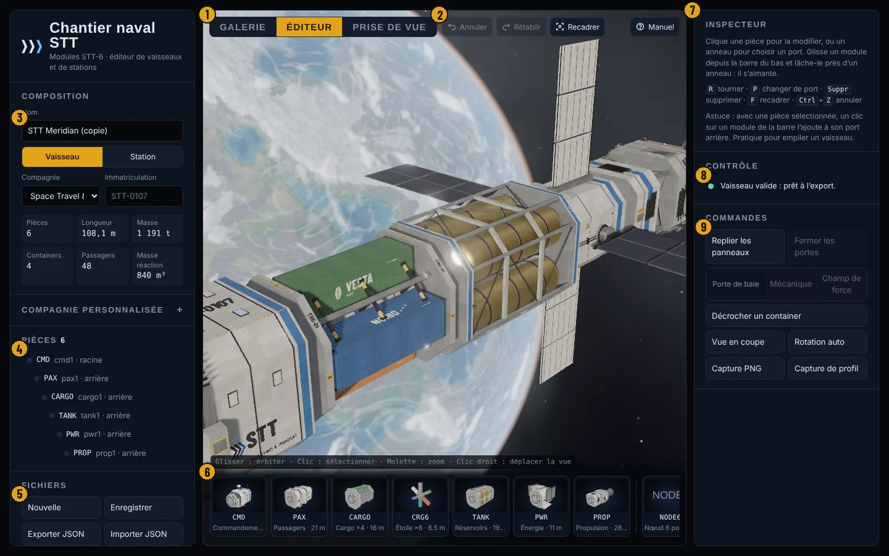
- 1Onglets Galerie / Éditeur / Prise de vue
- 2Annuler, Rétablir, Recadrer, Manuel
- 3Composition : nom, type, compagnie, immatriculation, chiffres clés
- 4Pièces : l'arborescence de l'assemblage
- 5Fichiers et bibliothèque
- 6Barre de modules à glisser
- 7Inspecteur de la pièce ou du port sélectionné
- 8Contrôle : règles et chevauchements
- 9Commandes : panneaux, portes, départ des navettes, coupe, captures
Dans la vue 3D : glisser pour orbiter, molette ou pincement pour zoomer, clic droit (ou deux doigts) pour déplacer la vue.
02Démarrer une composition
Au premier lancement, l'éditeur ouvre une copie du STT Meridian. Ton travail est enregistré automatiquement comme brouillon dans le navigateur : tu le retrouves à la prochaine ouverture.
- Clique Nouvelle dans Fichiers. Si la composition en cours n'est pas enregistrée, un second clic confirme.
- Choisis le type : Vaisseau ou Station.
- Glisse un premier module n'importe où dans la vue : il devient la racine, placée à l'origine. Tu peux aussi partir d'un modèle existant.
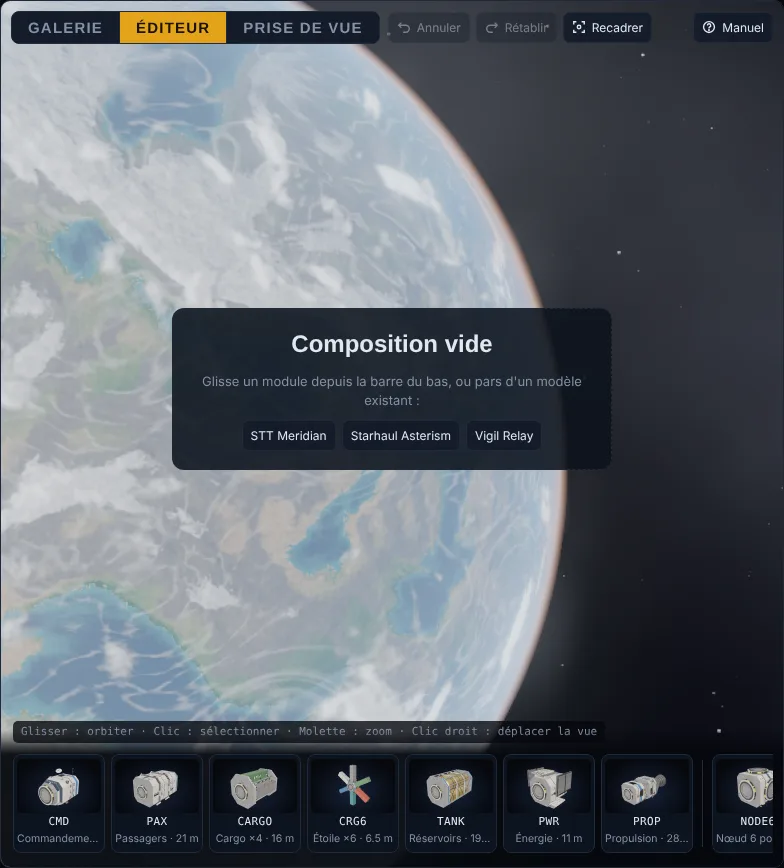
03Assembler des modules
Glisser-déposer
- Appuie sur une vignette de la barre de modules et fais-la glisser dans la vue. Sur écran tactile, tire la vignette vers le haut.
- Les ports libres compatibles s'affichent en anneaux cyan. Le plus proche du pointeur passe en ambre et le fantôme holographique s'y aimante.
- Relâche : le module s'emboîte. Lâché ailleurs, il n'est pas ajouté.
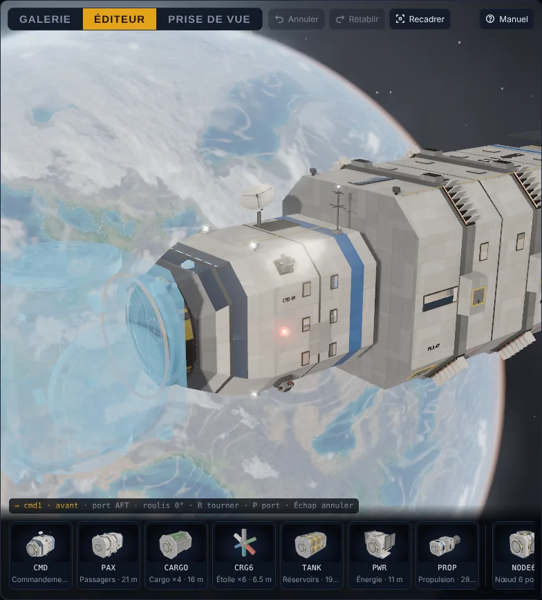
Couleur du fantôme : cyan, emboîtement correct · ambre, chevauchement avec une pièce · rouge, aucun port à portée.
Pendant le glissement : R tourne de 90° (Maj+R en sens inverse), P change le port utilisé sur le module (par exemple fixer un nœud par son côté), Échap annule.
Empiler au clic
Sélectionne une pièce puis clique une vignette : le module se fixe sur le port libre préféré de cette pièce (l'arrière d'abord), et devient la nouvelle sélection. Quelques clics suffisent pour empiler un vaisseau : CMD, PAX, CARGO, TANK, PWR, PROP.
Partir d'un port
Clique un anneau : l'inspecteur liste les modules compatibles avec ce port, un clic suffit pour l'y ajouter. Les plateformes de baie (repère carré ambre) n'acceptent que la navette.
04Modifier une pièce
Clique une pièce dans la vue ou dans l'arborescence. Elle est encadrée en ambre et l'inspecteur affiche ses réglages.
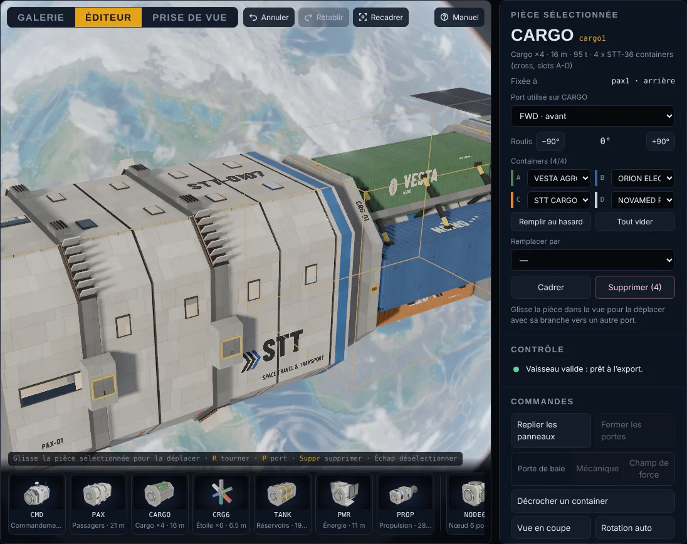
- Port utilisé et roulis (−90° / +90°) : réoriente la pièce sans la détacher.
- Containers (CARGO et CRG6) : une marque par slot, remplissage au hasard ou vidage complet.
- Remplacer par : change le module en gardant ses enfants quand leurs ports existent sur le nouveau module.
- Déplacer : glisse la pièce sélectionnée vers un autre anneau. Toute sa branche suit.
- Supprimer : retire la pièce et sa branche. Au-delà d'une pièce, un second clic confirme. Ctrl+Z restaure.
05Stations, zones et amarrage
En type Station, le module de propulsion est interdit : sa vignette est grisée, et le contrôle signale tout PROP restant.
- Zones de stockage : A Passagers, B Containers, C Liquides. La zone colore la livrée de la pièce. « Appliquer à toute la branche » zone d'un coup un nœud et tout ce qui en dépend. Un module ajouté hérite de la zone de son parent.
- Ports d'amarrage : clique un anneau libre puis Déclarer comme port d'amarrage. Il pulse en bleu et part dans l'export : c'est là que les vaisseaux viennent s'amarrer.
- Baie navette : porte mécanique (vantaux animés) ou champ de force. La navette se pose sur la plateforme de la baie, ou s'amarre par son port dorsal sur un anneau.
- Lancer la navette (dans Commandes, ou dans l'inspecteur d'une navette sélectionnée) joue son départ. Le bouton marche dans la Galerie, l'Éditeur et la Prise de vue, et devient Rappeler pour le retour, joué à l'envers.
- Depuis une baie : la porte mécanique s'ouvre si elle était fermée, la navette décolle du patin et sort par la porte latérale. Elle vire ensuite vers l'extérieur et allume ses deux tuyères. Au retour, la porte se referme si elle l'était.
- Depuis un anneau : la navette recule le long de l'axe de l'anneau en jouant des RCS, vire, puis allume ses tuyères.
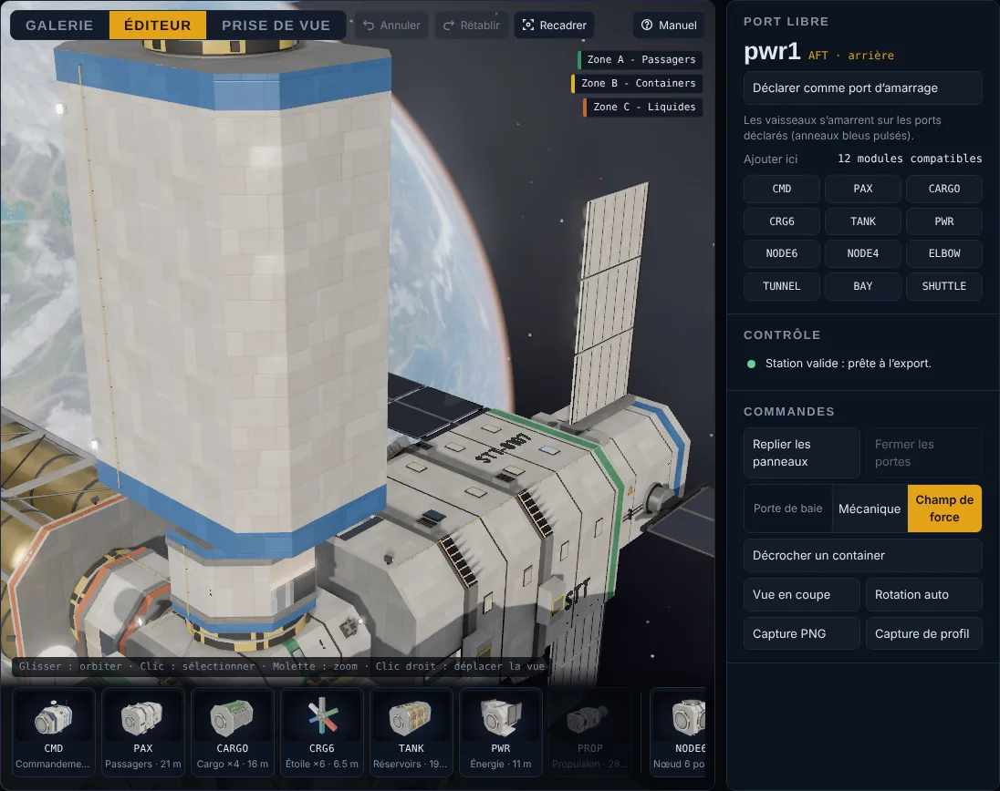
06Compagnie et livrée
Choisis la compagnie dans Composition : la couleur de livrée, le logo et l'immatriculation des stickers changent sur tous les modules. Le champ Immatriculation remplace celle de la compagnie pour cette composition uniquement.
Pour créer ta compagnie, ouvre Compagnie personnalisée ou choisis « + Nouvelle compagnie… » dans la liste. Renseigne le nom, le sigle du logo, le slogan, l'immatriculation, la couleur et l'emblème. L'aperçu montre le logo en version claire et en version sombre. Créer et appliquer génère les stickers dans le navigateur et habille la composition.
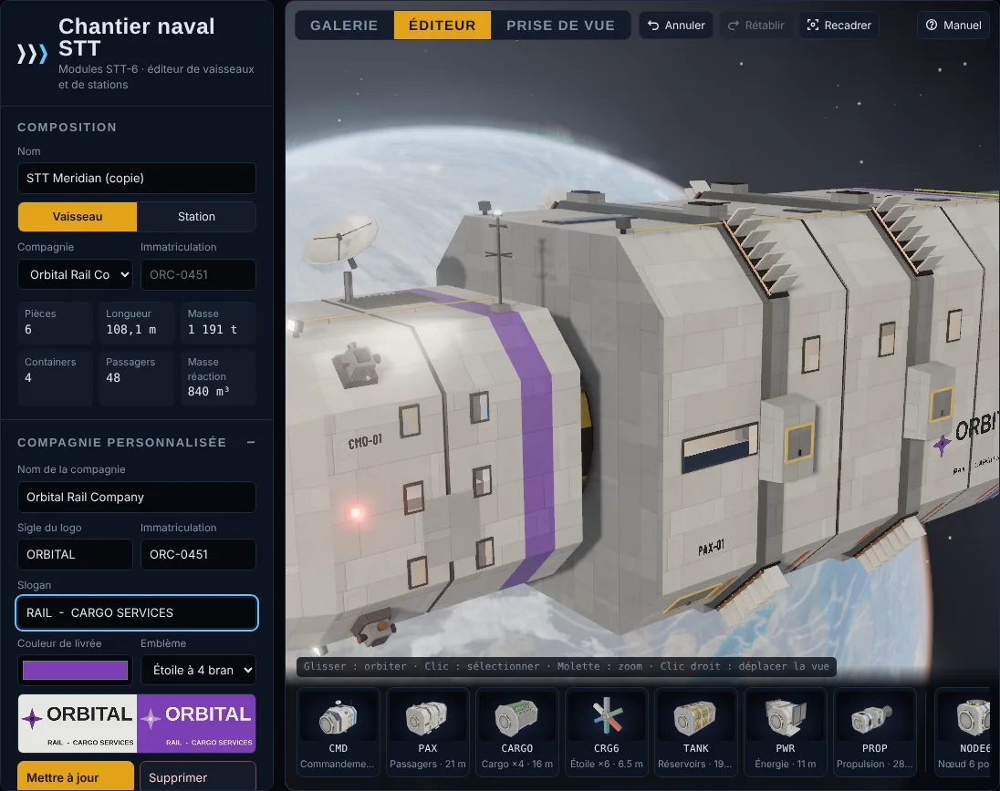
Les compagnies personnalisées sont gardées dans ce navigateur, et incluses dans le JSON exporté : une composition importée ailleurs garde sa livrée.
07Contrôle de la composition
Le panneau Contrôle se met à jour à chaque modification. Clique un message pour cadrer les pièces concernées.
- Erreurs : propulsion sur une station, jet du propulseur qui frappe un module.
- Avertissements : chevauchement entre deux pièces (encadrées en rouge dans la vue), aucun ou plusieurs PROP, pas de commandement ni d'énergie, poussée décentrée par rapport au centre de masse.
- Infos : par exemple, station sans port d'amarrage déclaré.
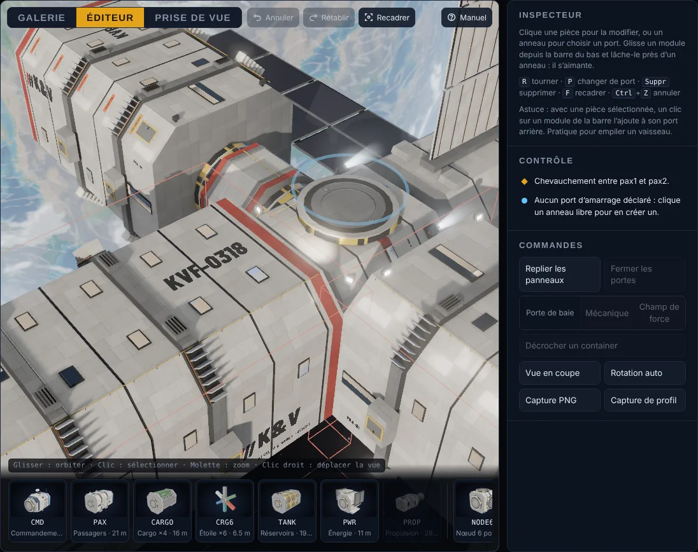
08Fichiers et bibliothèque
- Enregistrer range la composition dans ta bibliothèque (dans ce navigateur). Depuis la liste, clique une entrée pour l'ouvrir, le crayon pour la renommer (Entrée valide, Échap annule), ✕ pour la supprimer.
- Exporter JSON propose le téléchargement d'un fichier
stt-composition. Copier le JSON le met dans le presse-papiers. - Importer JSON charge un fichier. Tu peux aussi glisser un fichier .json sur la page, ou utiliser Coller du JSON. Formats acceptés : composition STT, vaisseau ou station de
fleet.json, oufleet.jsonentier (tout part dans la bibliothèque). - Dans la Galerie, la section Ma bibliothèque affiche tes compositions en lecture seule. Renommer change le nom de l'entrée sélectionnée. Modifier dans l'éditeur rouvre l'entrée elle-même, pas une copie.
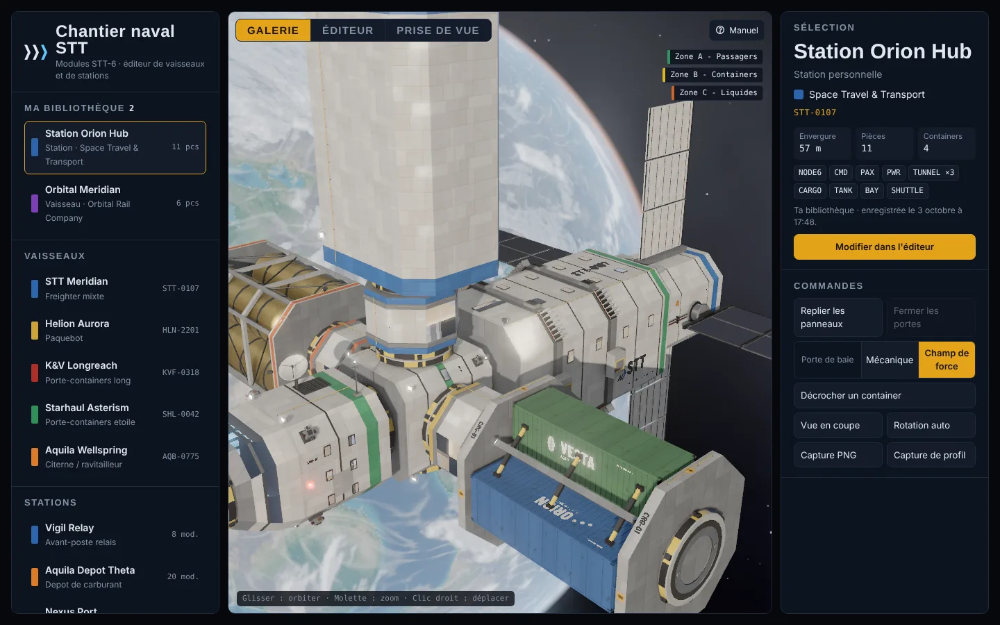
La bibliothèque est propre à ce navigateur et à cet appareil. Exporte en JSON pour garder une copie ou l'envoyer à quelqu'un.
09Rendu, effets et filtres
Le panneau Rendu se trouve dans l'onglet Prise de vue. Tes réglages sont gardés d'une visite à l'autre.
La qualité, les effets et l'éclairage s'appliquent dans les trois onglets. Les filtres d'image (cinéma, CRT, thermique, plan technique, SSAO, profondeur de champ) ne s'appliquent qu'en Prise de vue, pour garder l'édition fluide. Le Bloom reste actif partout.
- Qualité. Éco : résolution 1×, sans antialiasing ni ombres ni projecteurs. Équilibrée : 1,5×, antialiasing, ombres 2048, 4 projecteurs. Haute : 2×, ombres 4096, 8 projecteurs.
- Ambiance. Jour : soleil dur. Éclipse : le soleil passe derrière la planète, l'atmosphère s'embrase, les projecteurs s'allument. Amarrage : soleil rasant et projecteurs.
- Effets : propulseurs (avec le curseur de poussée), RCS, feux de position clignotants, champs de force, hublots éclairés avec l'intérieur visible, projecteurs.
- Éclairage : ombres du soleil, planète et ciel procéduraux, azimut et élévation du soleil.
- Filtres, cumulables : Bloom HDR, Caméra cinéma (grain, vignettage, aberration, reflets d'objectif), Écran CRT, Thermique, Plan technique, Occlusion SSAO.
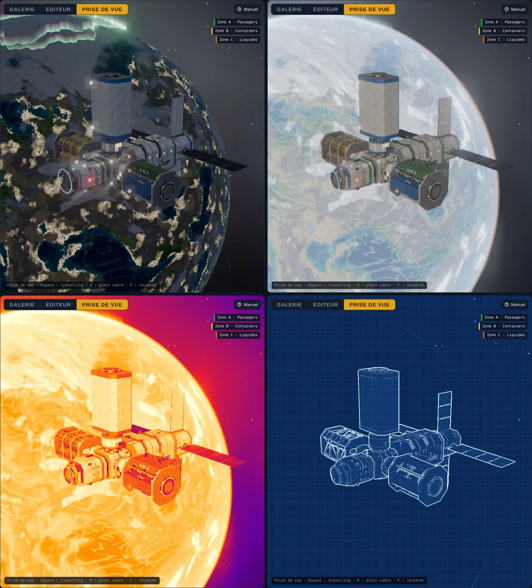
Si l'image saccade, passe en Éco, ou coupe SSAO et les ombres en premier.
Captures
Capture PNG enregistre la vue actuelle en haute résolution, avec les filtres actifs. Capture de profil cadre la composition de côté, utile pour une fiche technique.
10Prise de vue
L'onglet Prise de vue reprend le sujet affiché dans l'onglet précédent. Tu peux en choisir un autre dans Sujet : la composition en cours, une entrée de ta bibliothèque, ou un vaisseau ou une station de la flotte. La barre de modules et les repères d'édition disparaissent.
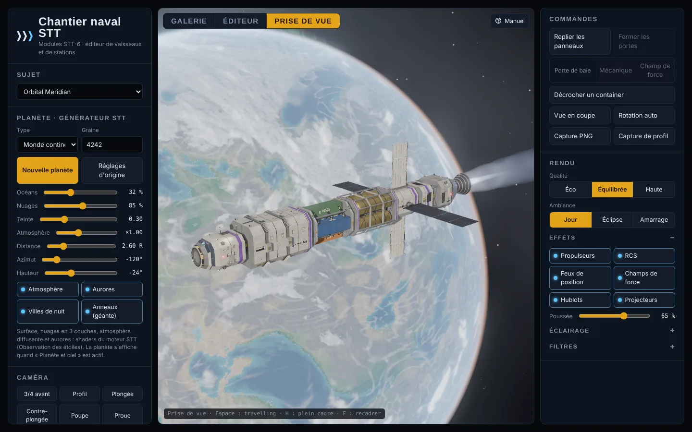
Caméra
- Angles : 3/4 avant, Profil, Plongée, Contre-plongée, Poupe, Proue. La caméra glisse jusqu'au cadrage choisi.
- Focale de 14 à 200 mm. Le cadrage est conservé : en téléobjectif, la perspective s'écrase, comme en photo.
- Profondeur de champ : active-la, puis clique sur une pièce pour faire la mise au point. L'ouverture règle la quantité de flou.
- Format (16:9, 21:9, 1:1, 4:5, 9:16) et grille des tiers pour composer l'image. La capture PNG est recadrée au format choisi.
- Plein cadre (H) masque toute l'interface. Échap pour revenir.
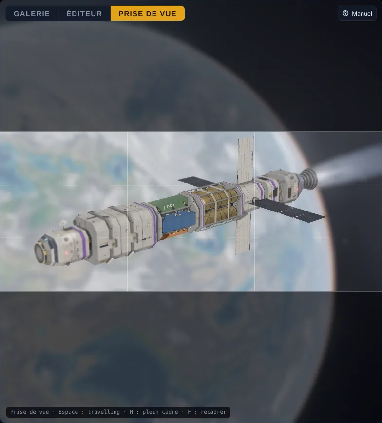
Travelling et vidéo
Choisis un mouvement (Orbite, Passage latéral ou Approche), règle la vitesse, puis Lancer (Espace). Enregistrer produit une vidéo WebM de la vue entière, filtres compris. Sous Vidéo, choisis la durée :
- Durée fixe : de 3 s à 5 min, au curseur.
- Un cycle : exactement un tour d'orbite, un passage ou une approche. La vidéo boucle sans à-coup, et la vitesse du travelling règle sa durée (42 s pour un tour à ×0,60). Arrêter le travelling arrête la vidéo.
- Libre : la vidéo tourne jusqu'à ce que tu cliques sur Arrêter l'enregistrement, dans la limite de 10 min.
Lancer le travelling avec la vidéo est actif par défaut. Désactive-le pour filmer en plan fixe, par exemple le départ d'une navette ou un container qu'on décroche. Le bandeau REC affiche le temps écoulé et la progression. Il n'apparaît pas dans la vidéo. Compte environ 1,5 Mo par seconde.
11Le générateur de planète
La planète d'arrière-plan vient du moteur du jeu STT (démo « Observation des étoiles ») : surface procédurale à détail adaptatif, trois couches de nuages avec cyclones, atmosphère diffusante, villes de nuit et aurores polaires. Les géantes gazeuses peuvent recevoir des anneaux.
- Type : océanique, continental, désertique, glacé, volcanique ou géante gazeuse.
- Graine : la même graine donne toujours la même planète. Nouvelle planète tire un type et une graine au hasard.
- Océans, Nuages, Teinte et Atmosphère règlent l'aspect. Distance, Azimut et Hauteur placent la planète dans le ciel.
- Ambiance Éclipse : le soleil passe derrière la planète, dont le limbe s'illumine.
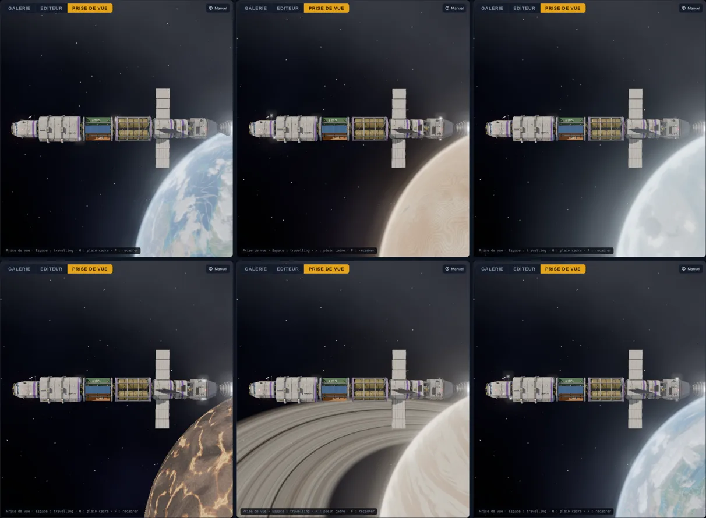
La planète est rendue à part, à une résolution qui dépend de la qualité (½ en Éco, ¾ en Équilibrée, pleine en Haute). Coupe « Planète et ciel » dans Rendu › Éclairage pour retrouver un fond étoilé simple.
12Raccourcis clavier
| Touche | Action |
|---|---|
| R / Maj+R | Roulis de +90° / −90° (pièce sélectionnée ou pendant le glissement) |
| P | Changer le port utilisé par le module |
| Suppr | Supprimer la pièce sélectionnée et sa branche |
| F | Cadrer la sélection, ou toute la composition |
| Échap | Annuler le glissement, désélectionner, fermer le manuel |
| Ctrl+Z / Ctrl+Y | Annuler / rétablir (120 étapes) |
| H | Prise de vue : plein cadre |
| Espace | Prise de vue : lancer ou arrêter le travelling |
| ? | Ouvrir ce manuel |
13Envoyer dans le jeu
Une composition devient un vaisseau jouable, ou un port orbital, de Space Travel & Transport. Le jeu assemble les mêmes modules avec la même règle d'accouplement : ce que tu vois ici est ce que tu piloteras.
- Fiche de jeu (panneau de l'éditeur) : chaque champ laissé sur Auto est calculé comme dans le jeu. Le palier dépend de la masse réelle des modules : I sous 800 t, II sous 1 300 t, III sous 2 000 t, IV au-delà. La famille dépend du contenu : 4 containers ou plus → fret, 48 passagers ou plus → passagers, 2 réservoirs ou plus → vrac. Les paliers III et IV sont long-courriers, c'est-à-dire supraluminique et saut quantique.
- Pour une station, la fiche donne la classe de chaque port d'amarrage déclaré : S (vaisseau jusqu'à 100 m), M (180 m) ou L (240 m). Il en faut au moins un en L : sinon, l'anneau le plus dégagé le devient.
- Pour le jeu (dans Fichiers, ou en bas de la fiche) exporte la composition validée, avec ses valeurs figées. L'export est refusé s'il reste une erreur au contrôle, ou si un vaisseau n'a pas de module PROP.
- Dans le jeu, deux chemins :
- dépose le fichier dans
sources/src/data/compositions/, puis lancepython3 build.py: la création fait partie du jeu publié ; - ou, dans le hangar du jeu, utilise Importer une création… : la création est gardée dans ce navigateur, sans rien reconstruire.
- dépose le fichier dans
- En jeu, les tuyères Epstein se posent sur l'échappement du module PROP, les RCS sur les tuyères de manœuvre, les feux sur les feux de position. Les anneaux de distorsion et le générateur de saut entourent la moitié arrière du module de propulsion. Une baie sert de hangar aux engins de livraison, et la navette amarrée s'efface pendant leur sortie.
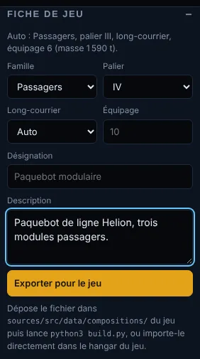
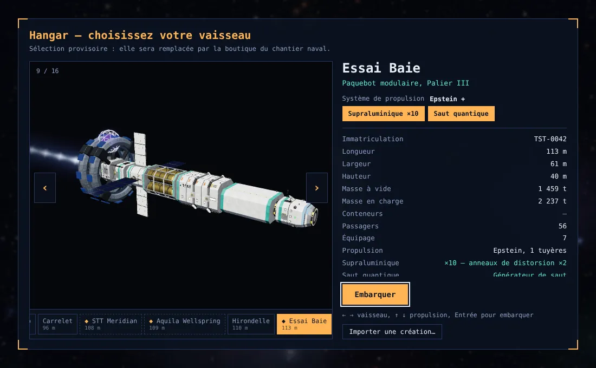
Les créations sont repérées par ◆ dans la bande du hangar. Leur fiche affiche les masses réelles des modules Blender.
14Sur téléphone et tablette
La vue 3D occupe le haut de l'écran, l'inspecteur et les panneaux défilent dessous. Pour ajouter un module, tire sa vignette vers le haut dans la vue, ou sélectionne une pièce puis touche la vignette. En Éco, l'éditeur reste fluide sur la plupart des téléphones.
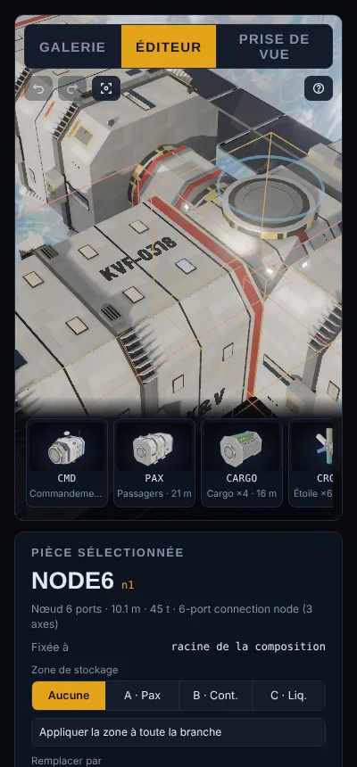